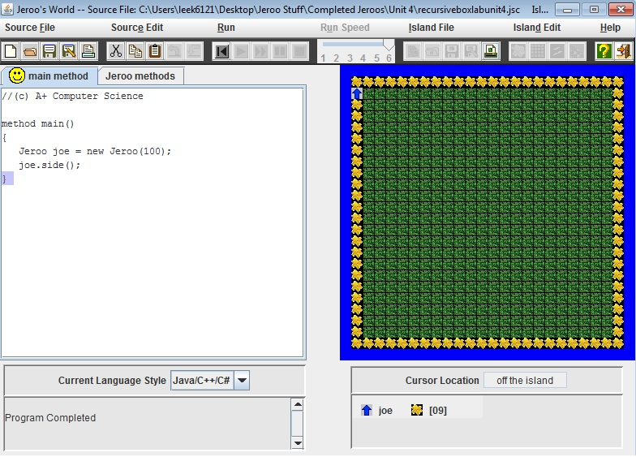

Jeroo Content
Unit 1
Fenced In Lab
Description:
In the Fenced In Lab, we learned how to use few commands multiple times. We also learned when to turn, when to hop, how to change directions, and how to stop in time before the Jeroo hits a net. This was an essential lab that built the foundation for later labs.
Nets Lab

Description:
In the Nets Lab, we learned how to determine when to hop, when to pick flowers, when to toss flowers in order to get rid of nets, and to stop at the right time. This was an extension of the previous lab and added an element of allowing the destruction of obstructions.
Unit 2
Box Lab

Description:
In the Box Lab, we learned how to start with the correct amount of flowers. We also learned how to make a box pattern through multiple steps. This allowed us to control the Jeroo so that it would go where we wanted it to go.
LED Lab
Description:
In the LED lab, we learned how to make methods so that it would reduce the amount of coding on the main method side. We learned how to incorporate other methods into a method to make numbers, since numbers have shared lines. This was important because it made us learn how to use and make methods that would later set a precedent for coding.
Unit 3
Lockup Lab
Description:
In the Lockup Lab, we learned how to analyze the tasks that we needed to complete, use methods in order to accomplish those tasks, and take advantage of using multiple Jeroos. This was an important lab because it allowed us to control more than one Jeroo so that each Jeroo has less work to do and organizes the coding more.
Water Lab
Description:
In the Water Lab, we determined how many flowers we needed. We also learned new ways of creating methods so that the water ponds would be filled easily with the least amount of coding. This was important because it allowed us to incorporate previous lessons into one.
Unit 4
Alley Run Lab
Description:
In the Alley Run Lab, we determined when to pick the flowers the Jeroo finds, disable nets and replace them with flowers, plant flowers across from each stretch of water, and stop when there is no more land. This is an important lab because it allowed us to use the new methods we learned before and made us see what those methods are capable of.
Recursive Box Lab

Description:
In the Recursive Box Lab, we learned how to make a loop that would continually use the same code while allowing the Jeroo to stop when we want it to. This opened up new possibilities for coding as we won't have to retype the same methods or code in order to do a repetitive task.